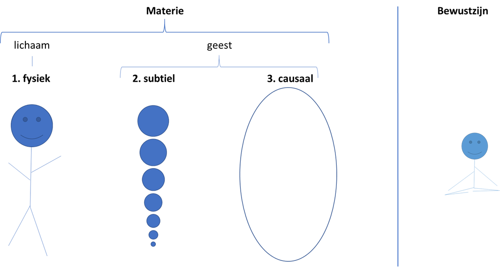
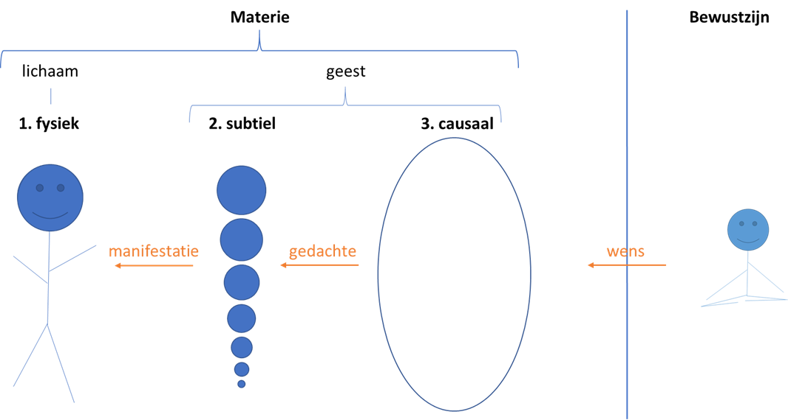

Zien zoals het is
Augustus 2018
Hoe bewust ben jij? Onderdeel van ontwaken is zien zoals het werkelijk is. Als het is gelukt om de geest stiller te krijgen door concentratie en meditatie, niet meer reagerend op zintuiglijke ervaringen, dan vergroot het bewustzijn en gaat er meer energie stromen. Door bewust te zijn kun je opmerken dat de energie je eigen gedachten volgt en dat je op deze manier je eigen ervaring stuurt. Dit blog laat je zien hoe het vergroten van je bewustzijn werkt en hoe je daarmee kunt zien zoals het is.
Er is meer dan je op het eerste gezicht ziet
De fysieke wereld kun je heel goed waarnemen, die bestaat uit het lichaam en allerlei fysieke vormen om je heen. De vormen kun je ruiken, proeven, horen, zien, aanraken en vastpakken. Je kunt al je zintuigen gebruiken om met de vormen in contact te komen. Naast het lichaam spreekt men ook vaak van een geest. In je geest spelen gedachten en gevoelens zich af. Die zijn minder grijpbaar, maar je herkent ze wel. Lichaam en geest beïnvloeden elkaar: een perceptie van je zintuigen veroorzaakt een oordeel in je geest. Je ruikt iets (lichaam) en vindt het stinken (geest). En andersom, een gedachte veroorzaakt een sensatie op je lichaam. Je denkt aan een geliefde en je lichaam vult zich met warmte en fijne sensaties. Een onderverdeling van de geest in denken en voelen, geeft een totaal van drie werelden waarin je je beweegt, zie onderstaand figuur.

We maken onderscheid tussen: 1, de fysieke wereld, de wereld van de vormen, 2, de subtiele wereld, de wereld van energie en gedachten en 3, de causale wereld, de wereld van gevoel en ideeën. Deze drie werelden vormen de materie.
Aandacht en bewustzijn
Voor de meeste van ons speelt het leven zich voornamelijk af in de fysieke wereld. Daar is onze aandacht, bij alle zintuigen die ons informatie over deze wereld geven. Maar probeer nu eens verder te kijken. Als je je ogen sluit, sluit je je eigenlijk al voor een heel groot deel van de fysieke wereld af. Waar moet dan je aandacht naar toe? Misschien ga je vanzelf meer horen, maar sluit je daar ook eens voor af, wat gebeurt er dan? Waar gaat je aandacht naar toe, misschien wel naar een gedachte... Nu wordt het interessant, je kunt je aandachtig zijn van een gedachte! Maar als je een gedachte kunt bekijken, dan betekent dat, dat je niet je gedachte bent. Net zoals je je lichaam kunt bekijken, maar niet je lichaam bent. En toch maken je lichaam en gedachte onderdeel uit van jou als geheel.
Misschien kun je nu begrijpen dat je je ook kunt onttrekken van je gedachten, net zoals je jezelf kunt onttrekken van je lichamelijke zintuigen. De gedachten zijn er, net zoals een lichamelijke sensatie ontstaat. En het goede nieuws is dat je niets met een gedachte hoeft te doen. Je kunt een gedachte gewoon over laten gaan. Net zoals het geluid van een auto die langs rijdt weer over gaat, zo verdwijnt ook een gedachte die bij je opkomt, vanzelf. Probeer eens wat vaker naar een gedachte te kijken en die te laten verdwijnen, voordat je er op gaat reageren met een andere gedachte, dat brengt je in de stilte.
En wat blijkt, als je je gedachten blijft observeren, dan blijft er een gevoel over. Achter iedere gedachte zit een bepaalde gevoelswaarde, waaruit de gedachte is ontstaan. Dit moet je niet verwarren met emotie, een emotie is een reactie op een gedachte, en is daarmee net zo vluchtig als een gedachte. De emotie kun je dus bekijken, net zoals je een gedachte kunt bekijken. Het gevoel achter de gedachte is de oorsprong van de gedachte. Je kunt dit vergelijken met je intuitie. Als je in een situatie terecht komt krijg je een gevoel bij de situatie, 'het voelt goed', of juist niet. Of de eerste indruk van iemand die je voor het eerst ontmoet. Zonder een woord gesproken te hebben, 'weet' je al om wat voor persoon het gaat. Het gaat om dat gevoel, daar kun je ook met je aandacht zijn.
Als je met je aandacht bij je lichaam kunt zijn, bij een gedachte, bij een gevoel, wat is die aandacht dan? Die aandacht is geen materie, want je kunt je aandachtig zijn van alle materie. Die aandacht is iets groters, wat ik bij voorkeur bewustzijn noem. Je zou kunnen zeggen dat je bewustzijn bent, omdat je je bewust kunt zijn van je lichaam, van je gedachte, van je gevoel. Met de term bewustzijn doen we het geheel alsnog te kort, omdat, zoals je nu misschien kunt begrijpen, het bewustzijn voorbij de wereld van onze gedachte ligt. We kunnen het geheel niet uitdrukken in de termen waarmee onze gedachten worden gevormd, daar zijn geen woorden voor. Maar voor het gemak zouden we kunnen zeggen dat we de materie bekijken vanuit ons bewustzijn.
Eén zijn
In dit verhaal wordt onderscheidt gemaakt tussen materie en bewustzijn. Dit is hetzelfde onderscheidt wat gemaakt wordt als gesproken wordt over het verschil tussen vorm en leegte of over de grote illusie en de waarheid. Ook kan de materie gezien worden als het leven in de dualiteit en het bewustzijn als non-dualiteit.
Iedere naamgeving klopt en tegelijkertijd is het niet te beschrijven. Het bewustzijn is de bron van alles, en gaat de materie ver te boven. Het onbeschrijfelijke van één zijn, de kracht en de liefde, is niet te omvatten door onze afgescheiden persoonlijkheden. En toch hoop ik je hiermee een idee te geven. Maar je kunt het alleen zelf ervaren. Sluit je ogen, zonder je af van materiële activiteiten, en voel dat het goed is, zoals het is. Dat gevoel komt het dichtst in de buurt van de werkelijkheid.
Gedachten beïnvloeden vorm
Hierboven doorlopen we het plaatje van links naar rechts, van ons fysieke lichaam, naar de gedachten, via het gevoel naar het bewustzijn. We lezen die kant op omdat wij voornamelijk in de veronderstelling leven dat onze gedachten beïnvloed worden door de fysiek vormen om ons heen. Omdat onze geest continu aan het oordelen en reageren is op onze fysieke sensaties, zijn we vergeten dat onze gedachten ook invloed hebben op ons lichaam.
We kunnen het plaatje ook van rechts naar links gaan lezen. Als we de keten doorlopen vanuit bewustzijn, naar gevoel, gedachten en fysiek, dan komen we tot het ontstaan van de vorm. Dit is namelijk het creatie proces wat ten grondslag ligt aan ALLE vorm. In werkelijkheid is het dus zo dat onze gedachten de vorm beïnvloeden. Zie deze tekening.

Dit creatie proces kan als volgt samengevat worden: uit ons bewustzijn komt een wens voort, die vanuit een idee en gevoel in de causale wereld vertaalt wordt in een gedachte, die door de energie in de subtiele wereld een manifestatie krijgt in de fysieke wereld.
Dit is waarom de dingen gebeuren zoals ze gebeuren. Als jij een bepaalde wens hebt, dan zal deze wens zich gaan uiten op een bepaalde manier en op een bepaalde manier in de vorm gerealiseerd worden. Misschien niet zoals jij op voorhand had gedacht, want er zijn veel schakels en afhankelijkheden in dit proces. Dit vraagt om goede focus, maar let maar eens op, als je de volgende keer een wens of gedachte hebt, komt die dan uit? Of datgene wat je is overkomen onlangs, had je niet iets soortgelijks gewenst een tijd(je) terug?

Ontdek jezelf
In dit blog is het proces van zelfrealisatie geschetst. Er zitten twee kanten aan. Allereerst hebben we het proces van links naar rechts doorlopen: door ons te onttrekken van ons fysieke lichaam, gedachten en gevoelens komen we bij ons bewustzijn, ons ware zelf. Dan zien we zoals het is. Vervolgens kunnen we vanuit ons ware zelf het creatie proces aanschouwen (en in gang zetten) en doorlopen we het proces van rechts naar links, door ons bewust te zijn van alle stappen, van onze wens, naar de gedachte, naar de vorm.
Het mooie is dat je deze zelfrealisatie kunt leren en ervaren. Je kunt gewoonten afleren, stoppen met oordelen en reageren, waardoor het creatieproces zich vanzelf openbaart. Dan kun je je openstellen om je diepste wensen in vervulling te laten gaan. Door het vergrote bewustzijn en de stroom van energie ontstaat datgene wat op dat moment voor je nodig is. Dan kom je echt tot leven, vanuit jezelf!
Wil je hiermee aan slag?
Lees meer BOE blogs
Neem contact op
Ga naar www.ssstil.nl